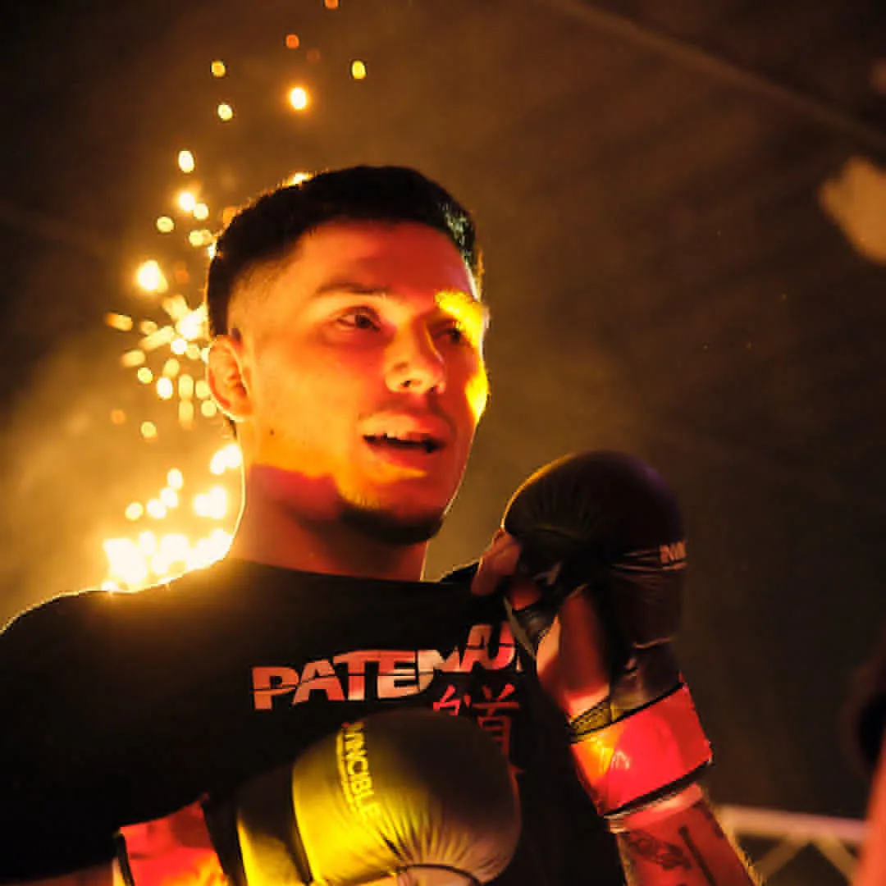
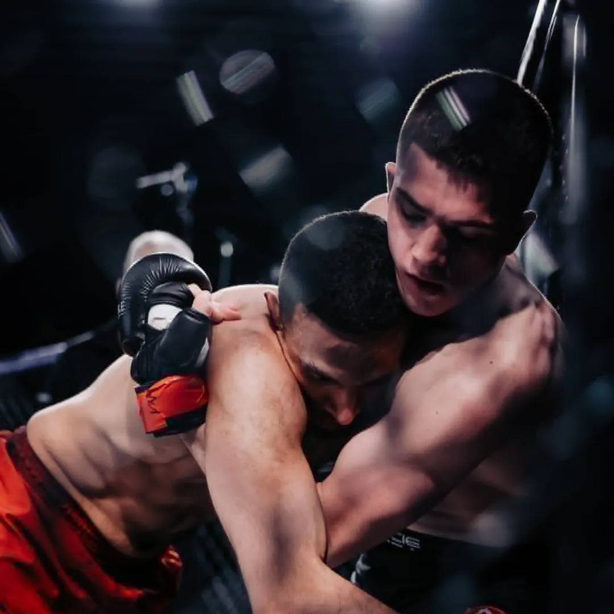
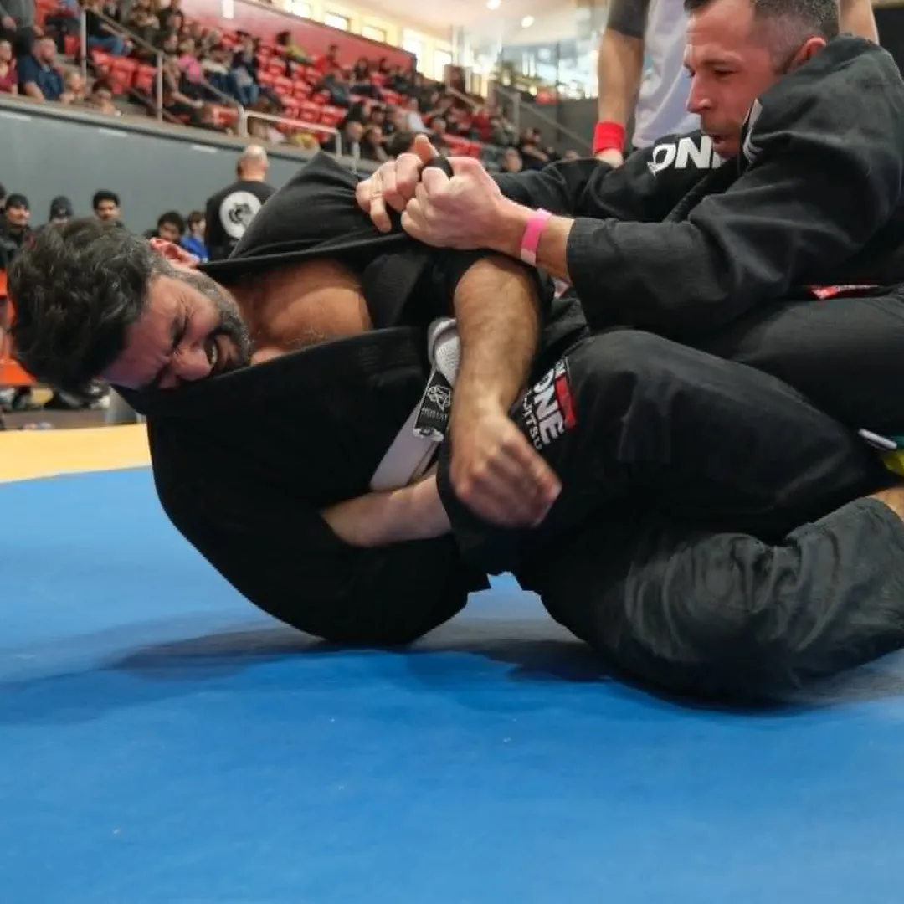
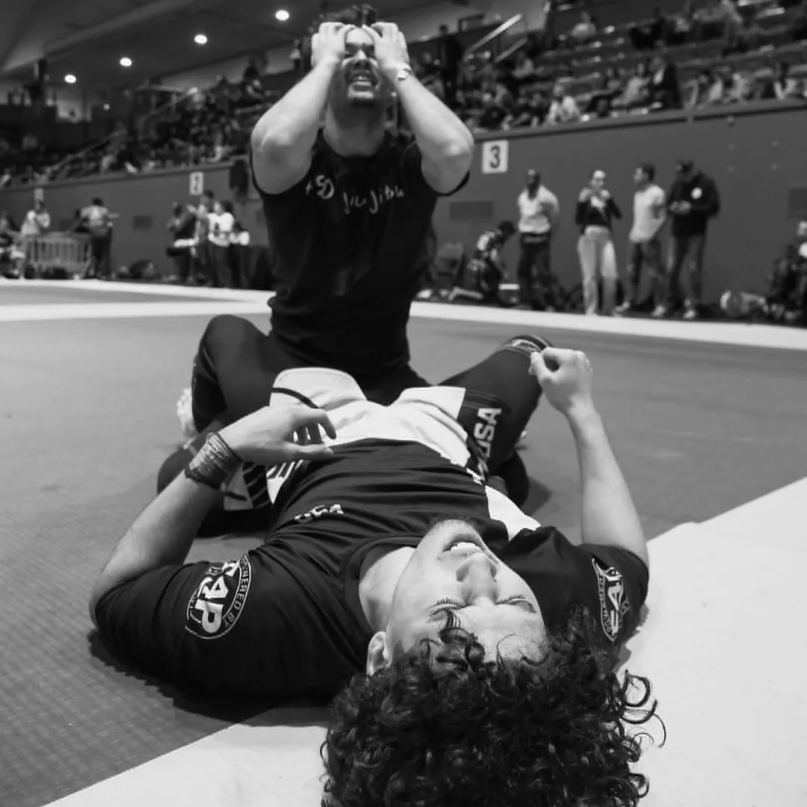
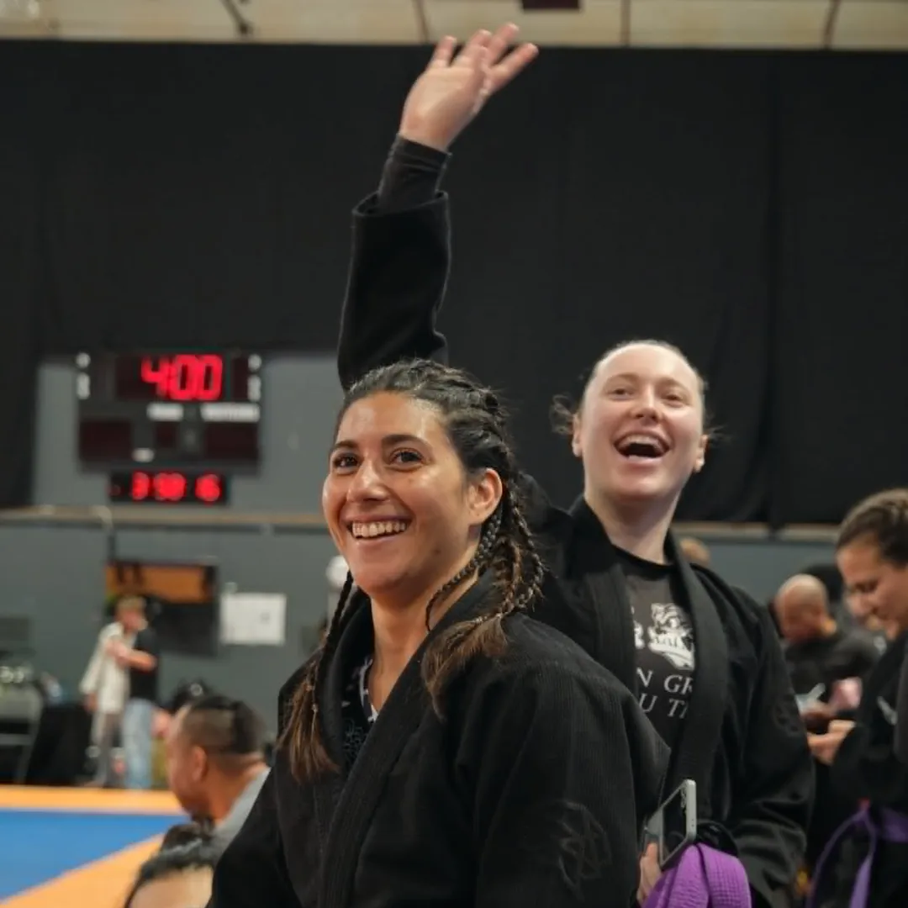

Culture.
Studio sessions, competition days, fight nights.
Thinkandwin.
001 — fight night and competition day. Event photography, not the line.





The line, worn.
The team in the gear — every one of these frames is Prodigy’s own.
 The studio session — the black GENIUS gi, one light, one purple belt.
The studio session — the black GENIUS gi, one light, one purple belt.
 Competition day — the white GENIUS gi steps onto the mats.
Competition day — the white GENIUS gi steps onto the mats.
 The details carry the brand — the brain patch on the front skirt, under the belt.
The details carry the brand — the brain patch on the front skirt, under the belt.
 The black no-gi kit — built to be worn as one, on both of you.
The black no-gi kit — built to be worn as one, on both of you.
 Taping up — the Core long sleeve before the round.
Taping up — the Core long sleeve before the round.
 Competition blue — the GENIUS gi in blue.
Competition blue — the GENIUS gi in blue.